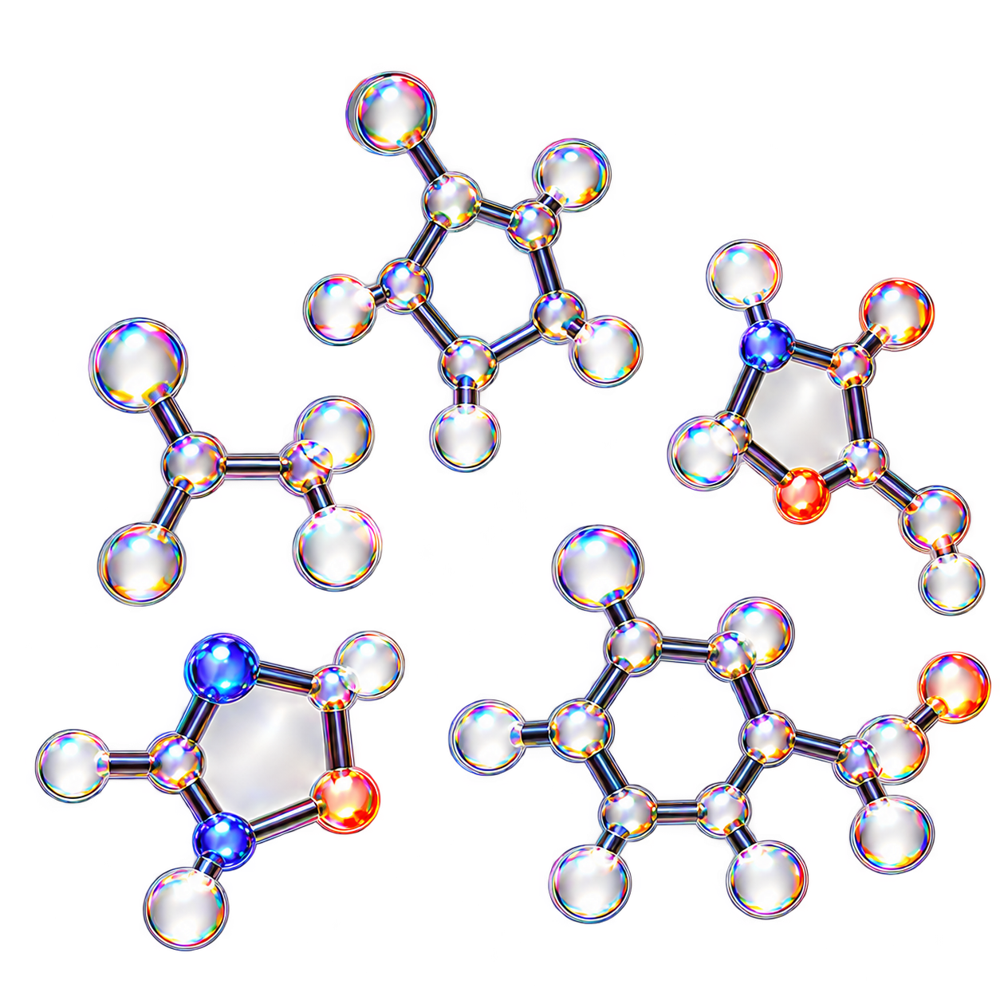

ColabFold MSA 서열 수집
원본 항체와 유사한 서열 약 7,300개를 정렬해 각 자리의 아미노산 분포를 구합니다.
CRISTA · MSA & REPERTOIRE DIVERSITY
비슷한 항체 약 7,300개를 모아 자리마다 아미노산이 얼마나 갈리는지 1~9등급으로 봅니다.

원본 항체와 유사한 서열 약 7,300개를 정렬해 각 자리의 아미노산 분포를 구합니다.
거의 모든 항체에서 같은 아미노산이면 9등급, 항체마다 많이 다르면 1등급이 됩니다.
일반 단백질과 달리 항체 CDR은 원래 다양하게 진화했으므로 레퍼토리 다양성으로 부릅니다.
9등급 쪽 골격·핵심 자리는 잠그고, 1~4등급 가변 자리를 중심으로 변이를 설계합니다.
'진화적 보존 패턴이 3D 구조의 단서가 된다'는 원리를 항체 레퍼토리 특성에 맞춰 정확히 가르칩니다.